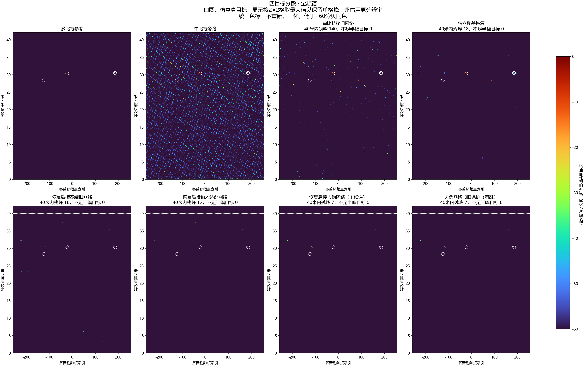
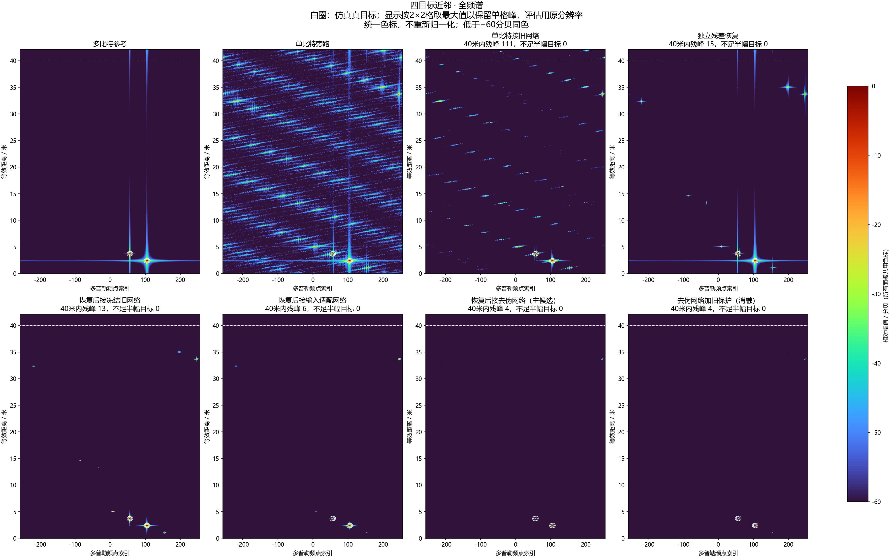
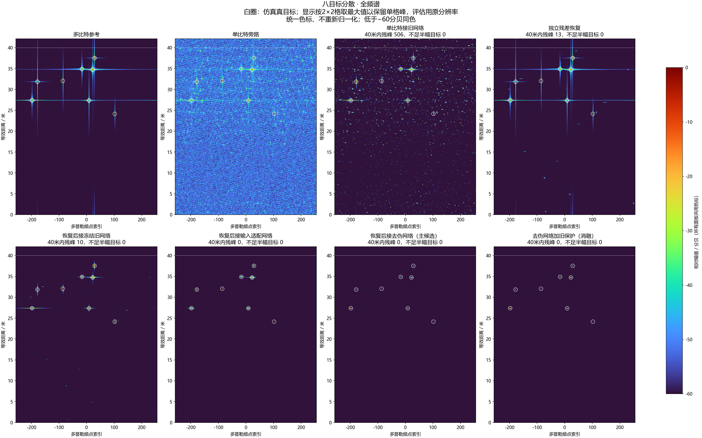
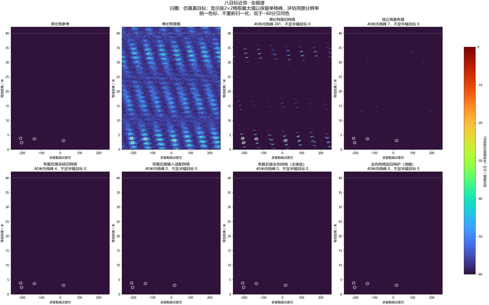
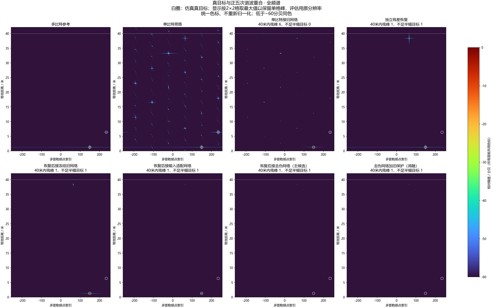
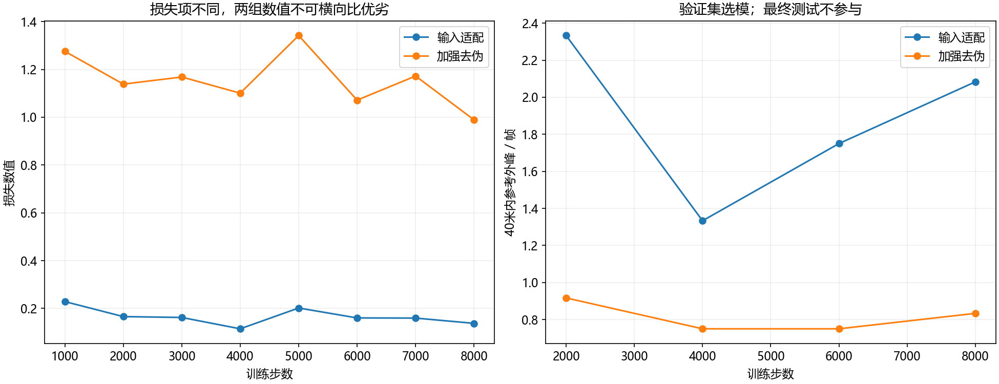

最终12帧新种子测试：主候选通过本轮预声明的去伪优先判据。40米内参考外残峰从独立恢复的8.92个/帧降到1.17，减少86.92%；主要目标不足半幅0/32，弱目标不足半幅12/14。这是去伪与弱目标保留的明显取舍，不是无损恢复。
所有图统一−60至0分贝，后级输出不重新归一化；白圈只用于评估。主要目标定义为参考相对幅值≥0.25。残峰是参考外误差诊断，不是实际检测虚警率。本轮只有PC仿真，无新BIT或上板。
| 方法 | 参考外峰/帧（≤40米） | 最强参考外幅值 | 超额能量/帧 | 主要目标不足半幅 | 弱目标不足半幅 | 全频谱参考外峰/帧 |
|---|---|---|---|---|---|---|
| 单比特接旧网络 | 101.00 | 0.32878 | 0.416091 | 0/32 | 0/14 | 105.50 |
| 独立残差恢复 | 8.92 | 0.68233 | 0.272169 | 0/32 | 3/14 | 9.17 |
| 恢复后接冻结旧网络 | 8.25 | 0.76470 | 0.336363 | 0/32 | 3/14 | 8.50 |
| 恢复后接输入适配网络 | 2.67 | 0.36135 | 0.0424868 | 0/32 | 13/14 | 2.75 |
| 恢复后接去伪网络（主候选） | 1.17 | 0.31417 | 0.0228525 | 0/32 | 12/14 | 1.17 |
| 去伪网络加旧保护（消融） | 1.17 | 0.31416 | 0.0259265 | 0/32 | 12/14 | 1.17 |
源帧：test_000_single_grid_a；种子：20261115000。所有方法使用同一帧，白圈不参与推理。
| 目标 | 距离/米 | 类别 | 参考幅值 | 单比特接旧网络 | 独立残差恢复 | 恢复后接冻结旧网络 | 恢复后接输入适配网络 | 恢复后接去伪网络（主候选） | 去伪网络加旧保护（消融） |
|---|---|---|---|---|---|---|---|---|---|
| 1 | 1.32 | 主要 | 1.0000 | 1.000 | 1.000 | 1.000 | 1.004 | 1.001 | 1.000 |
源帧：test_001_single_offgrid_a；种子：20261115001。所有方法使用同一帧，白圈不参与推理。
| 目标 | 距离/米 | 类别 | 参考幅值 | 单比特接旧网络 | 独立残差恢复 | 恢复后接冻结旧网络 | 恢复后接输入适配网络 | 恢复后接去伪网络（主候选） | 去伪网络加旧保护（消融） |
|---|---|---|---|---|---|---|---|---|---|
| 1 | 16.41 | 主要 | 1.0000 | 1.000 | 1.000 | 1.000 | 1.013 | 1.001 | 1.000 |
源帧：test_002_n4_spread；种子：20261115002。所有方法使用同一帧，白圈不参与推理。

| 目标 | 距离/米 | 类别 | 参考幅值 | 单比特接旧网络 | 独立残差恢复 | 恢复后接冻结旧网络 | 恢复后接输入适配网络 | 恢复后接去伪网络（主候选） | 去伪网络加旧保护（消融） |
|---|---|---|---|---|---|---|---|---|---|
| 1 | 30.30 | 主要 | 1.0000 | 1.000 | 1.000 | 1.000 | 0.976 | 0.985 | 1.000 |
| 2 | 28.41 | 主要 | 0.5079 | 1.006 | 1.473 | 1.568 | 1.489 | 1.478 | 1.478 |
| 3 | 30.51 | 主要 | 0.4249 | 0.998 | 1.468 | 1.579 | 1.451 | 1.453 | 1.453 |
| 4 | 30.34 | 主要 | 0.8387 | 0.952 | 0.758 | 0.811 | 0.766 | 0.763 | 0.763 |
源帧：test_003_n4_near_pairs；种子：20261115003。所有方法使用同一帧，白圈不参与推理。

| 目标 | 距离/米 | 类别 | 参考幅值 | 单比特接旧网络 | 独立残差恢复 | 恢复后接冻结旧网络 | 恢复后接输入适配网络 | 恢复后接去伪网络（主候选） | 去伪网络加旧保护（消融） |
|---|---|---|---|---|---|---|---|---|---|
| 1 | 2.37 | 主要 | 0.8325 | 0.948 | 0.905 | 0.926 | 0.937 | 0.957 | 0.957 |
| 2 | 2.40 | 主要 | 0.9075 | 0.938 | 0.869 | 0.876 | 0.877 | 0.916 | 0.916 |
| 3 | 3.69 | 主要 | 1.0000 | 1.000 | 0.912 | 0.923 | 0.895 | 0.892 | 0.892 |
| 4 | 3.74 | 主要 | 0.9737 | 0.920 | 1.027 | 1.027 | 1.007 | 1.009 | 1.027 |
源帧：test_004_n4_strong_weak；种子：20261115004。所有方法使用同一帧，白圈不参与推理。
| 目标 | 距离/米 | 类别 | 参考幅值 | 单比特接旧网络 | 独立残差恢复 | 恢复后接冻结旧网络 | 恢复后接输入适配网络 | 恢复后接去伪网络（主候选） | 去伪网络加旧保护（消融） |
|---|---|---|---|---|---|---|---|---|---|
| 1 | 13.38 | 主要 | 1.0000 | 1.000 | 1.000 | 1.000 | 0.986 | 0.988 | 1.000 |
| 2 | 9.55 | 弱 | 0.0770 | 0.722 | 1.218 | 1.827 | 0.097 | 0.019 | 0.019 |
| 3 | 16.96 | 弱 | 0.0935 | 0.773 | 1.547 | 2.320 | 0.461 | 0.043 | 0.043 |
| 4 | 5.68 | 弱 | 0.2046 | 0.768 | 0.912 | 1.368 | 0.140 | 0.051 | 0.051 |
源帧：test_005_n8_spread；种子：20261115005。所有方法使用同一帧，白圈不参与推理。

| 目标 | 距离/米 | 类别 | 参考幅值 | 单比特接旧网络 | 独立残差恢复 | 恢复后接冻结旧网络 | 恢复后接输入适配网络 | 恢复后接去伪网络（主候选） | 去伪网络加旧保护（消融） |
|---|---|---|---|---|---|---|---|---|---|
| 1 | 27.37 | 主要 | 0.9247 | 1.036 | 0.995 | 1.016 | 0.980 | 0.992 | 0.992 |
| 2 | 31.84 | 主要 | 1.0000 | 1.000 | 1.000 | 1.000 | 0.978 | 0.984 | 1.000 |
| 3 | 27.35 | 主要 | 0.9178 | 0.988 | 1.005 | 1.004 | 0.994 | 0.994 | 0.994 |
| 4 | 32.05 | 主要 | 0.4863 | 1.003 | 1.039 | 1.089 | 1.007 | 1.007 | 1.007 |
| 5 | 37.52 | 主要 | 0.7796 | 0.989 | 1.009 | 1.019 | 0.972 | 0.974 | 0.974 |
| 6 | 24.16 | 主要 | 0.3980 | 1.038 | 1.015 | 1.088 | 0.997 | 0.987 | 0.987 |
| 7 | 34.73 | 主要 | 0.8749 | 1.015 | 1.003 | 1.024 | 0.990 | 1.004 | 1.004 |
| 8 | 34.88 | 主要 | 0.4657 | 0.992 | 0.988 | 1.031 | 0.971 | 0.981 | 0.981 |
源帧：test_006_n8_near_pairs；种子：20261115006。所有方法使用同一帧，白圈不参与推理。

| 目标 | 距离/米 | 类别 | 参考幅值 | 单比特接旧网络 | 独立残差恢复 | 恢复后接冻结旧网络 | 恢复后接输入适配网络 | 恢复后接去伪网络（主候选） | 去伪网络加旧保护（消融） |
|---|---|---|---|---|---|---|---|---|---|
| 1 | 2.31 | 主要 | 1.0000 | 1.000 | 1.000 | 1.000 | 0.993 | 1.010 | 1.000 |
| 2 | 2.39 | 主要 | 0.7917 | 0.987 | 0.995 | 1.067 | 1.018 | 1.028 | 1.028 |
| 3 | 3.83 | 主要 | 0.8520 | 0.984 | 0.973 | 1.011 | 0.987 | 1.005 | 1.005 |
| 4 | 3.87 | 主要 | 0.7446 | 0.985 | 0.984 | 1.046 | 0.986 | 0.986 | 0.986 |
| 5 | 3.05 | 主要 | 0.8078 | 0.980 | 0.992 | 1.053 | 0.998 | 1.002 | 1.002 |
| 6 | 3.09 | 主要 | 0.6367 | 0.974 | 1.002 | 1.070 | 1.006 | 1.014 | 1.014 |
| 7 | 3.62 | 主要 | 0.7849 | 0.985 | 0.992 | 1.051 | 0.978 | 0.989 | 0.989 |
| 8 | 3.66 | 主要 | 0.3956 | 0.957 | 1.013 | 1.136 | 1.036 | 1.024 | 1.024 |
源帧：test_007_n8_strong_weak；种子：20261115007。所有方法使用同一帧，白圈不参与推理。
| 目标 | 距离/米 | 类别 | 参考幅值 | 单比特接旧网络 | 独立残差恢复 | 恢复后接冻结旧网络 | 恢复后接输入适配网络 | 恢复后接去伪网络（主候选） | 去伪网络加旧保护（消融） |
|---|---|---|---|---|---|---|---|---|---|
| 1 | 9.11 | 主要 | 1.0000 | 1.000 | 1.000 | 1.000 | 1.006 | 0.997 | 1.000 |
| 2 | 10.01 | 弱 | 0.0839 | 0.802 | 1.001 | 1.502 | 0.031 | 0.016 | 0.016 |
| 3 | 19.93 | 弱 | 0.1226 | 0.801 | 2.003 | 3.004 | 0.640 | 0.902 | 2.003 |
| 4 | 9.66 | 弱 | 0.1340 | 0.801 | 1.536 | 1.664 | 0.437 | 0.341 | 0.341 |
| 5 | 10.50 | 弱 | 0.2240 | 0.797 | 0.764 | 1.019 | 0.131 | 0.035 | 0.035 |
| 6 | 8.62 | 弱 | 0.0479 | 0.543 | 1.178 | 1.659 | 0.029 | 0.018 | 0.018 |
| 7 | 9.43 | 弱 | 0.2081 | 0.801 | 0.888 | 1.332 | 0.034 | 0.032 | 0.032 |
| 8 | 9.43 | 弱 | 0.1571 | 0.806 | 1.508 | 1.740 | 0.433 | 0.582 | 1.508 |
源帧：test_008_collision_minus3_grid；种子：20261115008。所有方法使用同一帧，白圈不参与推理。
| 目标 | 距离/米 | 类别 | 参考幅值 | 单比特接旧网络 | 独立残差恢复 | 恢复后接冻结旧网络 | 恢复后接输入适配网络 | 恢复后接去伪网络（主候选） | 去伪网络加旧保护（消融） |
|---|---|---|---|---|---|---|---|---|---|
| 1 | 23.55 | 主要 | 1.0000 | 1.000 | 1.000 | 1.000 | 1.007 | 1.003 | 1.000 |
| 2 | 13.67 | 弱 | 0.0612 | 0.806 | 0.000 | 0.000 | 0.000 | 0.000 | 0.000 |
源帧：test_009_collision_plus5_offgrid；种子：20261115009。所有方法使用同一帧，白圈不参与推理。

| 目标 | 距离/米 | 类别 | 参考幅值 | 单比特接旧网络 | 独立残差恢复 | 恢复后接冻结旧网络 | 恢复后接输入适配网络 | 恢复后接去伪网络（主候选） | 去伪网络加旧保护（消融） |
|---|---|---|---|---|---|---|---|---|---|
| 1 | 1.28 | 主要 | 1.0000 | 1.000 | 1.000 | 1.000 | 0.975 | 0.967 | 1.000 |
| 2 | 6.38 | 弱 | 0.0557 | 0.625 | 0.000 | 0.000 | 0.000 | 0.000 | 0.000 |
源帧：test_010_near_collision_plus5；种子：20261115010。所有方法使用同一帧，白圈不参与推理。
| 目标 | 距离/米 | 类别 | 参考幅值 | 单比特接旧网络 | 独立残差恢复 | 恢复后接冻结旧网络 | 恢复后接输入适配网络 | 恢复后接去伪网络（主候选） | 去伪网络加旧保护（消融） |
|---|---|---|---|---|---|---|---|---|---|
| 1 | 5.27 | 主要 | 1.0000 | 1.000 | 1.000 | 1.000 | 1.005 | 0.993 | 1.000 |
| 2 | 26.44 | 弱 | 0.2028 | 0.530 | 0.009 | 0.002 | 0.005 | 0.000 | 0.000 |
源帧：test_011_n2_strong_weak_offgrid；种子：20261115011。所有方法使用同一帧，白圈不参与推理。
| 目标 | 距离/米 | 类别 | 参考幅值 | 单比特接旧网络 | 独立残差恢复 | 恢复后接冻结旧网络 | 恢复后接输入适配网络 | 恢复后接去伪网络（主候选） | 去伪网络加旧保护（消融） |
|---|---|---|---|---|---|---|---|---|---|
| 1 | 23.75 | 主要 | 1.0000 | 1.000 | 1.000 | 1.000 | 1.002 | 0.999 | 1.000 |
| 2 | 38.94 | 弱 | 0.1101 | 0.752 | 0.912 | 1.368 | 0.037 | 0.014 | 0.014 |

此项为主结果后的诊断，仅用验证集选阈值，不改主候选。剩余强错误与逐目标损失
| 方法 | 参考外峰/帧 | 最强参考外幅值 | 超额能量 | 主要目标不足半幅 | 弱目标不足半幅 |
|---|---|---|---|---|---|
| 独立残差恢复 | 8.92 | 0.6823 | 0.27217 | 0/32 | 3/14 |
| 验证选参的简单幅值阈值 | 0.50 | 0.6823 | 0.11770 | 0/32 | 14/14 |
| 恢复后接去伪网络（主候选） | 1.17 | 0.3142 | 0.02285 | 0/32 | 12/14 |